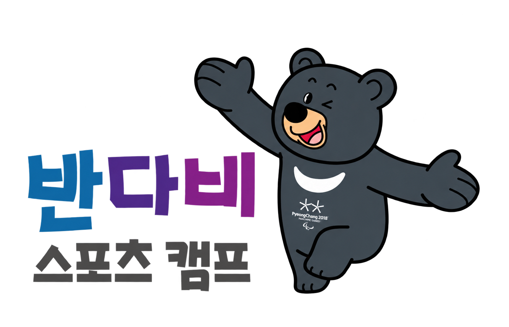

패럴림픽 종목 체험
파라아이스하키 등 새로운 스포츠에 도전하며 서로를 응원해요.

반다비와 함께 서로를 응원하며
포용의 가치를 경험해요.

아래는 2025년 캠프 소개에 기재된 운영 사례입니다. 현재 모집 여부, 일정, 대상과 세부 내용은 공식 안내에서 확인해 주세요.
장애인과 비장애인이 함께하는 스포츠의 즐거움
다름을 이해하고
함께 도전하는 시간.
반다비 캠프의 기존 소개에는 강릉 지역에서 패럴림픽 가치교육과 동계스포츠, 문화체험을 함께 경험하는 프로그램이 담겨 있습니다.
파라아이스하키 등 새로운 스포츠에 도전하며 서로를 응원해요.
스포츠를 통해 포용과 상호 이해의 의미를 배워요.
지역의 문화와 올림픽 유산을 만나며 함께하는 추억을 만들어요.
참고: 수호랑 캠프 원문 ↗ · 반다비 캠프 원문 ↗